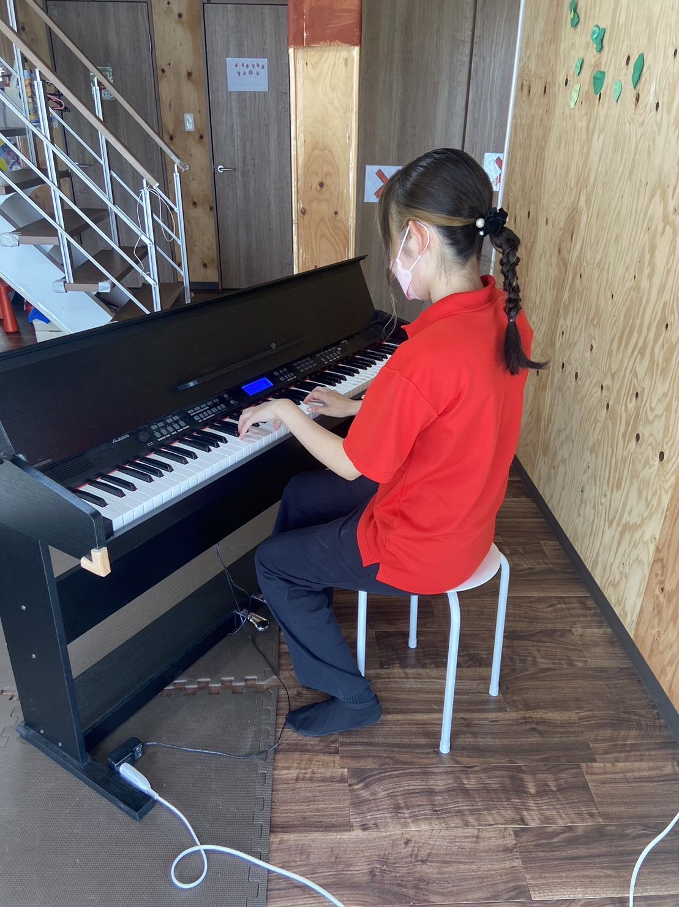
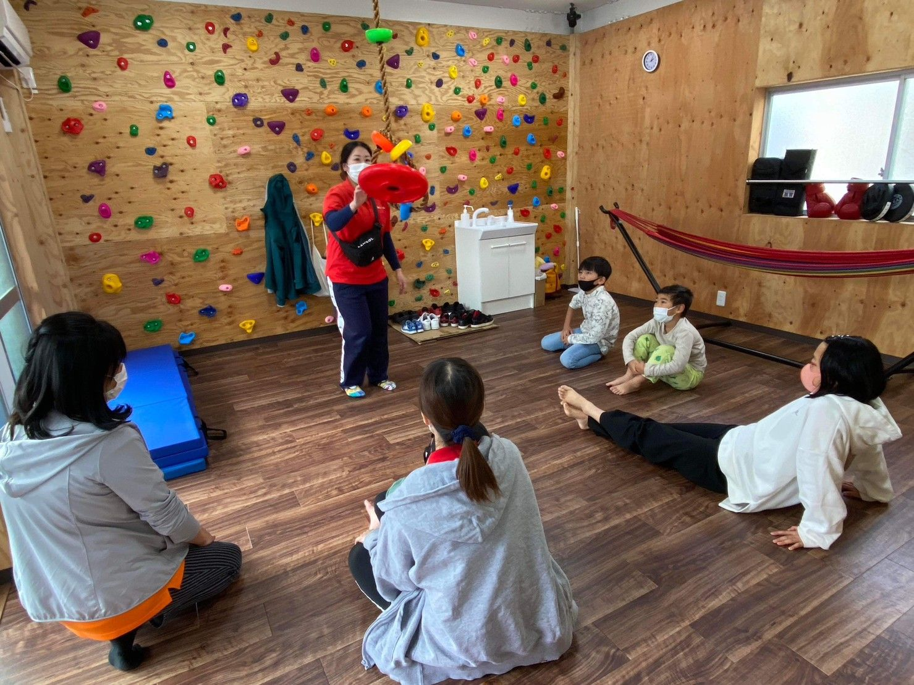

おりーぶ瑞穂／児童指導員
【仮】スタッフA
前職：学習塾の講師／3年目
福祉の経験だけが、必要なわけじゃない。
教えること。話を聴くこと。身体を動かすこと。人を楽しませること。
おりーぶ瑞穂／児童指導員
【仮】スタッフA
前職：学習塾の講師／3年目MESSAGE
できないことを数えるのではなく、できるようになった瞬間に立ち会う仕事です。
昨日できなかったことが、今日できる。その瞬間に立ち会って、次の一歩を一緒に考える。
必要なのは福祉の知識より先に、目の前の人の「やってみたい」に気づく力です。気づいたあとに何をするかは、チームで考えます。
教えてきた人、人を楽しませてきた人、身体を動かしてきた人、話を聴いてきた人。その経験は、そのまま支援の形になります。
おりーぶは兵庫県伊丹市・尼崎市で、子どもの療育から、働く場所、暮らす場所までを運営しています。関われる現場の幅が広いぶん、自分の得意が活きる場所も見つけやすい環境です。
ただし、簡単な仕事だとは言いません。記録も、保護者対応も、覚えることはあります。だから最初の数か月は必ず先輩と一緒に動きます。
EPISODES
理念より先に、実際にあった出来事を読んでください。この仕事が何なのかは、ここに全部あります。
要差し替え構成確認用のダミーです。スタッフへの聞き取りで差し替え、利用者が特定されない表現にしてください。
YOUR SKILL
療育、就労支援、農園、カフェ、情報発信。現場の幅が広いので、前職がそのまま武器になります。

DIAGNOSIS
4問で1分。採用の合否とは関係なく、回答は保存も送信もされません。
JOBS
資格が必要な仕事と、そうでない仕事があります。入口を正直に書いています。
要確認給与・勤務時間は確定値に差し替え、Indeedの原稿と同一の表記にすること。
A DAY
要確認実際のシフトに合わせて時刻を修正してください。
PEOPLE
共通しているのは、誰かの「できた」を一緒に喜べることだけです。
要差し替え氏名・経歴はダミー、写真はイメージです。撮影と掲載同意の取得後に差し替えてください。
PLACES
子ども向けの事業所と、大人向けの事業所があります。勤務地の希望は相談できます。
FAQ
条件があるものは条件を、決まっていないものは決まっていないと書いています。
まず30分だけ、事業所を見にきてください。スタッフに質問するだけでも構いません。応募するかどうかは、そのあとで決めれば大丈夫です。
STEP 1
見学を申し込む。所要30分、私服で大丈夫です。
STEP 2
事業所を見て、働いている人に質問する。
STEP 3
気になれば応募。合わなければ、そこで終わりで構いません。
STEP 4
面接、そして入職。最初の数か月は先輩と一緒に動きます。